32 of 32 records shown
| No. | Record | Series | Date | Years | Maker | Status | Grade | Where | Evidence | Vers. | Disp. | Open | |
|---|---|---|---|---|---|---|---|---|---|---|---|---|---|
| 1 | 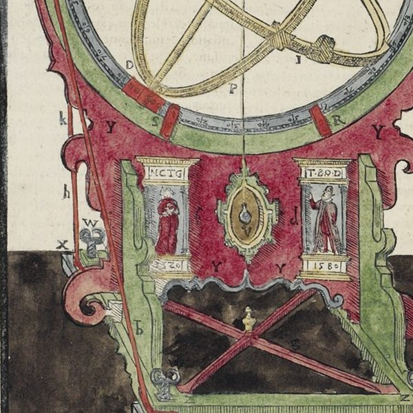 | The portraits on the equatorial armillary's pedestal | lifetime | c. 1584 (instrument built) – December 1596 (the recording block's first issue); the inscribed '1580' is Tycho's floruit year, not an execution date | 1584–1598 | Unrecorded. Christianson's 'probably painted by… | lost | A | Det Kongelige Bibliotek (hand-coloured exemplar), Copenhagen | destroyed | 2 | 2 | |
| 2 | 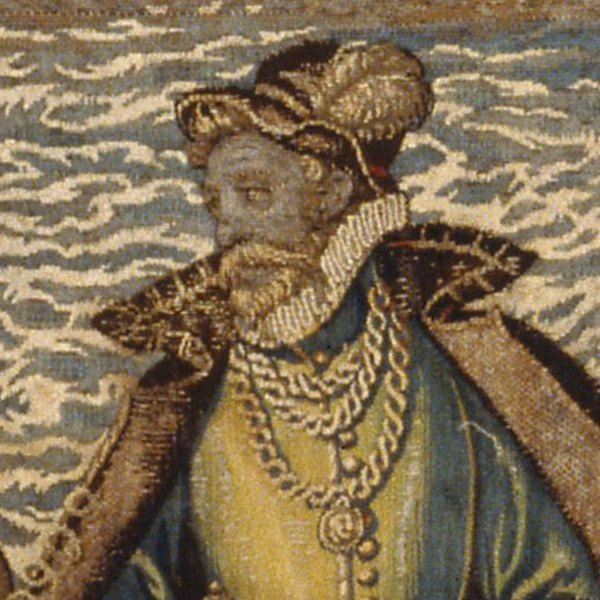 | The Kronborg tapestry figure — the conjectured earliest likeness | lifetime | 1581–1584 (woven) | 1581–1584 | Hans Knieper's tapestry workshop, Helsingør | extant | C | Nationalmuseet, Danmarks Middelalder og Renæssance, Copenhagen | located | 2 | ||
| 3 | 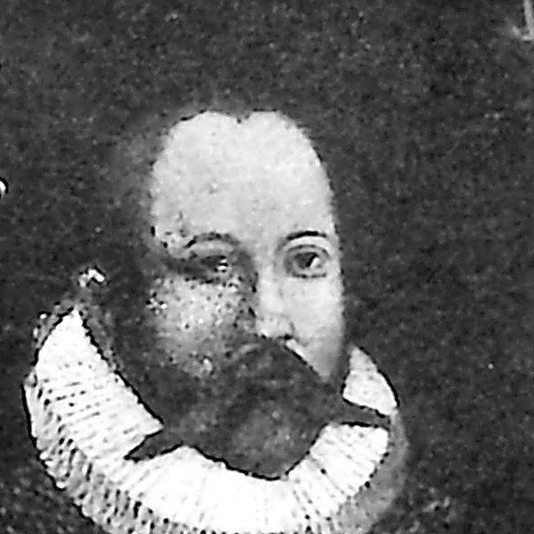 | The Steensgaard panel — a lifetime portrait or an early copy, never tested | lifetime | the likeness c. mid-1580s; the panel untested | 1584–1588 | untraced | C | Candidate: Det Nationalhistoriske Museum på Frederiksborg, Hillerød | untraced | 2 | 5 | ||
| 4 | — | The Stjerneborg astronomer cycle — Tycho as the terminus of his own science | lifetime | 1584 – 1594 | 1584–1594 | Unrecorded. Tycho names nobody. Beckett &… | lost | A | Site only: Stjerneborg | destroyed | 1 | ||
| 5 | 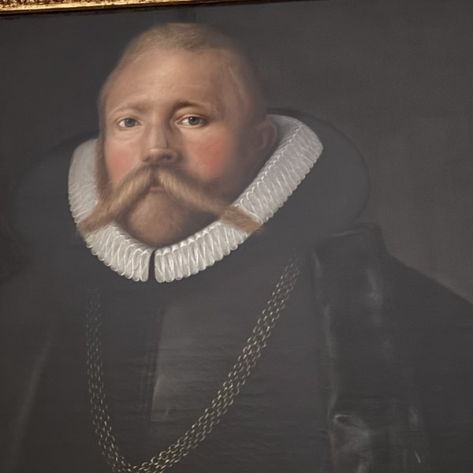 | The Frederiksborg oil (attributed to Gemperlin) — known through C. A. Jensen's 1838 copy | lifetime | c. 1586–87 (original); burned 1859 | 1586–1587 | Attributed to Tobias Gemperlin | lost | B | Roskilde Kloster (Den Skeel-Juel-Brahe'ske Stiftelse), Roskilde | located | 6 | 2 | 1 |
| 6 | 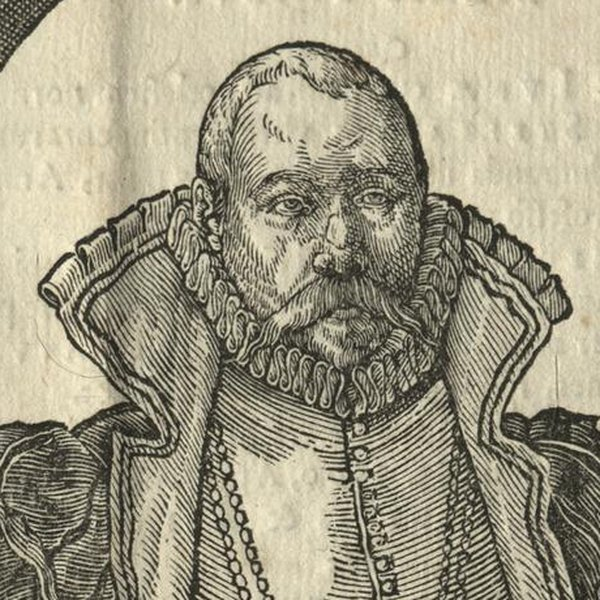 | The woodcut 'Effigies' (Westergaard 1376) — the praedelineatum's record | lifetime | design 1586; in use by February 1592 | 1586–1592 | Anonymous cutter | extant | B | Impressions in institutional collections | edition multiple | |||
| 7 | 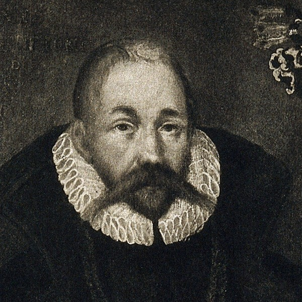 | The Prague panel — Mortensen's Clementinum portrait | lifetime | 1586–1592 (design family) | 1586–1601 | attested | C | Unlocated, Prague | attested | 4 | 7 | ||
| 8 | 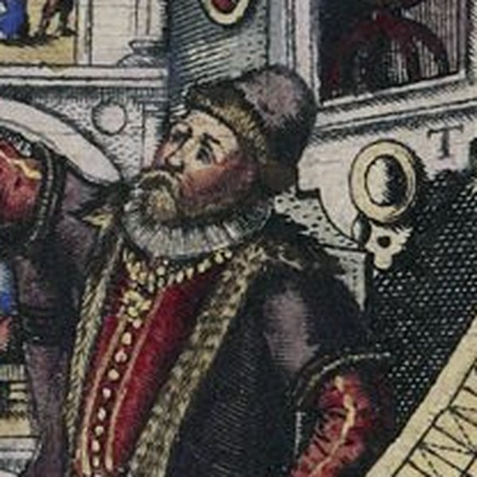 | The mural quadrant portrait (Uraniborg) | lifetime | 1586–1587 (tablet: 1587) | 1582–1587 | Tobias Gemperlin | lost | A | Site only: Uraniborg | destroyed | |||
| 9 | 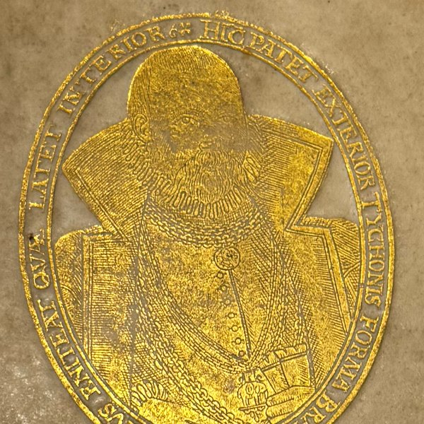 | The gilt portrait supralibros — two dies | lifetime | die by 20 March 1588 | 1586–1588 | Cutter unrecorded. With the die now dated… | extant | A | Best-documented example: Det Kongelige Bibliotek, Copenhagen, Copenhagen | located | 7 | 5 | |
| 10 | — | Frederik II's funeral procession, 1588 — Tycho among the coffin-bearers | lifetime | 5 June 1588 (the event); plate 1589 | 1588–1589 | Frans Hogenberg and Simon Novellanus, Cologne | extant | C | Schleswig-Holsteinische Landesbibliothek, Kiel | located | 1 | ||
| 11 | 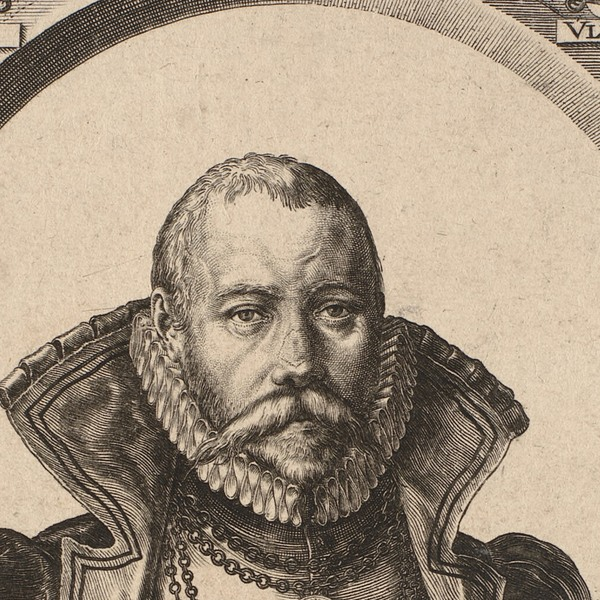 | De Gheyn's first engraving (Westergaard 1377) — the 'overloaded' portrait | lifetime | autumn 1590, Amsterdam | 1590 | Jacques de Gheyn II | extant | A | Statens Museum for Kunst, Den Kongelige Kobberstiksamling, Copenhagen | located | 1 | ||
| 12 | 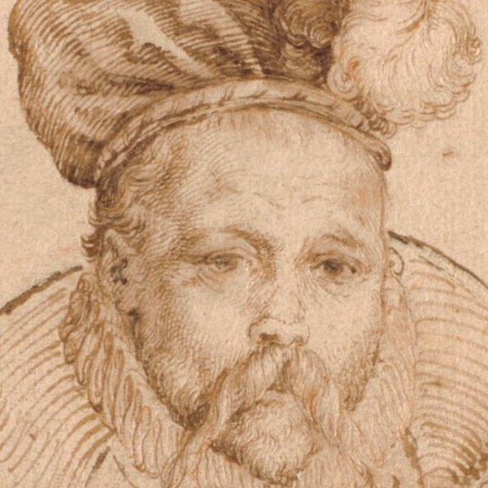 | The Copenhagen pen drawing (SMK KKSgb5254) — the second engraving's production drawing | lifetime | c. 1591–1595 | 1591–1595 | Jacques de Gheyn II is the best-supported hand | extant | A | Statens Museum for Kunst, Den Kongelige Kobberstiksamling, Copenhagen | located | |||
| 13 | 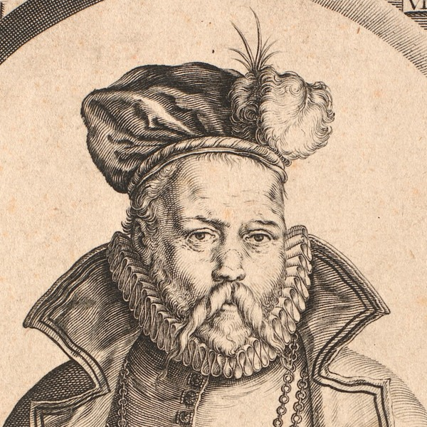 | De Gheyn's second engraving (Westergaard 1394) — the corrected portrait | lifetime | ordered December 1590; design fixed by mid-1595; plate completed by 1596 | 1591–1596 | Jacques de Gheyn II, signed in the plate | extant | A | Statens Museum for Kunst, Den Kongelige Kobberstiksamling, Copenhagen | located | 1 | ||
| 14 | 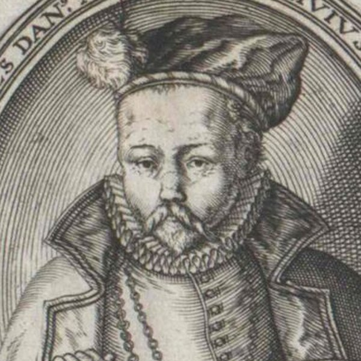 | Lambert Cornelisz's print (Westergaard 1409) — the copy Tycho disliked | lifetime | 1595, Amsterdam | 1595 | Lambert Cornelisz | extant | A | edition multiple | 7 | |||
| 15 | 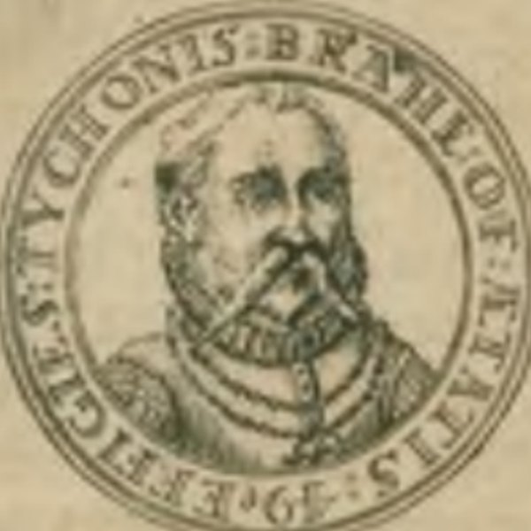 | The 1595 portrait medal — the only likeness in metal | lifetime | 1595 (dated on the medal) | 1595 | extant | B | Den kgl. Mønt- og Medaillesamling, Nationalmuseet, Copenhagen | attested | 5 | |||
| 16 | 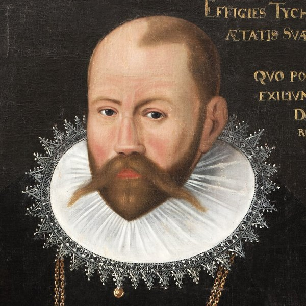 | The aetatis-50 portrait (Skokloster / Edinburgh) — the exile likeness | lifetime | 1597 (type; surviving canvases undated) | 1596–1597 | extant | B | Skoklosters slott (Statens historiska museer), Håbo | located | 7 | 6 | 8 | |
| 17 | 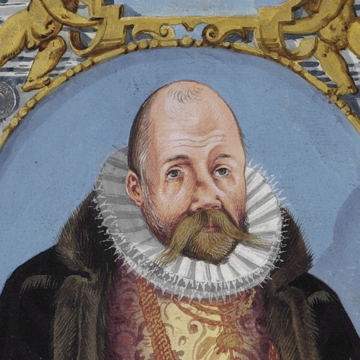 | The painted portraits in the finest Mechanica copies — Tycho between Ptolemy and Copernicus | lifetime | 1598 – c. 1600 | 1598–1601 | extant | B | Det Kongelige Bibliotek, Copenhagen | located | 5 | 3 | 2 | |
| 18 | 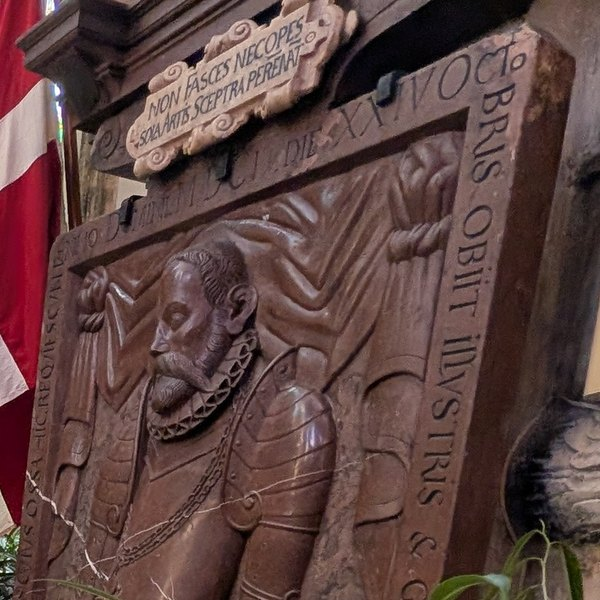 | The Týn church epitaph, Prague — the effigy that closes the series | lifetime | c. 1604 or some years after | 1604 | extant | B | Kostel Panny Marie před Týnem, Staroměstské náměstí | located | 1 | 1 | ||
| 19 | 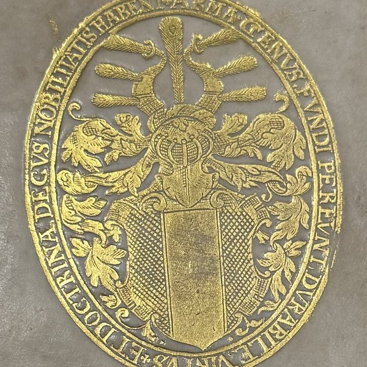 | The Brahe coat-of-arms supralibros | programme | 1588–1601 | 1588–1601 | extant | B | Documented on the Strahov Mechanica (arms on the back, por…, Prague | edition multiple | 1 | |||
| 20 | The inserted author portrait in Epistolae and Mechanica copies | programme | 1596–1598 | 1596–1598 | extant | B | edition multiple | ||||||
| 21 | — | The small gilt brass quadrant — an iconographic instrument | programme | c. 1573 | 1573 | lost | B | untraced | 2 | ||||
| 22 | 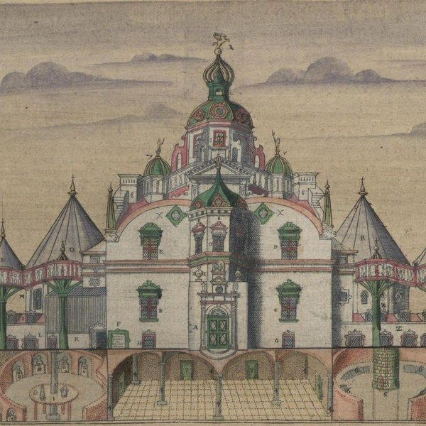 | The printed views of Uraniborg and Stjerneborg | programme | 1585–1598 | 1585–1598 | extant | A | Det Kongelige Bibliotek, Copenhagen | located | 3 | |||
| 23 | — | The posthumous copies (1602 onward) | afterlife | 1602–1655 | 1602–1655 | extant | A | edition multiple | 1 | 7 | |||
| 24 | 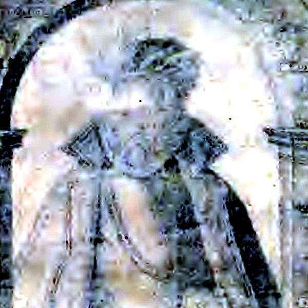 | The Gassendi Vita frontispiece (1655) — the portrait's afterlife | afterlife | 1654–1655 | 1654–1655 | Jacob van Meurs I | extant | A | edition multiple | ||||
| 25 | — | The Kågeröd epitaph, 1613 — Tycho kneeling among his parents' children | afterlife | 1613 | 1613 | Unrecorded | extant | B | Kågeröds kyrka (Kågeröd-Röstånga församling, Lunds stift), Kågeröd | located | 4 | ||
| 26 | — | Tycho's portrait on the celestial globes — a distribution channel begun in his lifetime | programme | from 1594; Blaeu's Tychonic globes from 1597/98, portrait confirmed on extant specimens from 1603 | 1594–1630 | Jacob Floris van Langren and his sons Arnold | extant | A | Historisches Museum Frankfurt, Frankfurt am Main | located | 1 | 5 | |
| 27 | — | The 1642 console clock — Tycho as proprietor of a world system | afterlife | 1623 or 1642 (both unfooted) | 1623–1642 | Unrecorded. The 2006 caption derives the Tycho… | extant | B | Nationalmuseet, Danmarks Middelalder og Renæssance, Copenhagen | located | |||
| 28 | — | Heinrich Hansen, 1882 — Tycho as national history painting | afterlife | 1882 | 1882 | Heinrich Hansen | extant | A | Det Nationalhistoriske Museum på Frederiksborg, Hillerød | located | |||
| 29 | — | Eckersberg's sketch, 1831 — the young Christian IV visiting Hven | afterlife | 1831 or later, by 1842 | 1831–1842 | C. W. Eckersberg | untraced | C | Det Nationalhistoriske Museum på Frederiksborg (attested o…, Hillerød | attested | 5 | ||
| 30 | — | The Levy memorial sheet — Tycho for children | afterlife | undated; 'måske 1901?' | 1855–1901 | Published by A. Levy, Copenhagen | untraced | C | Nationalmuseet, Antikvarisk-Topografisk Arkiv (ATA), Copenhagen | attested | 5 | ||
| 31 | 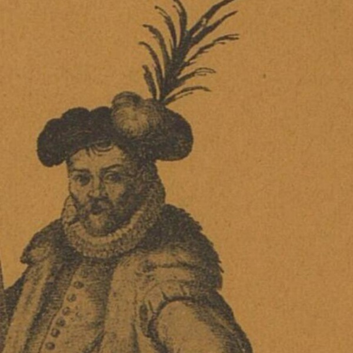 | The full-figure watercolour at Strahov — the standing Tycho with a sextant | afterlife | c. 1598 – 1666; the drawing's date is open | 1598–1666 | Unknown. Friis raises the possibility that it… | untraced | C | Strahovská knihovna, Královská kanonie premonstrátů na Str…, Prague | attested | 2 | 4 | |
| 32 | 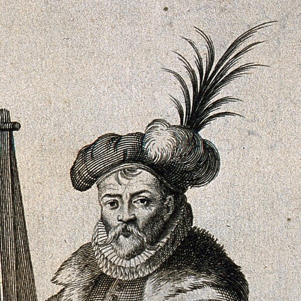 | Kilian's standing Tycho (1666) — a whole body invented around a borrowed head | afterlife | engraved after July 1658; published 1666 | 1658–1666 | Philip Kilian | extant | A | Wellcome Collection, London | located | 2 | 6 |